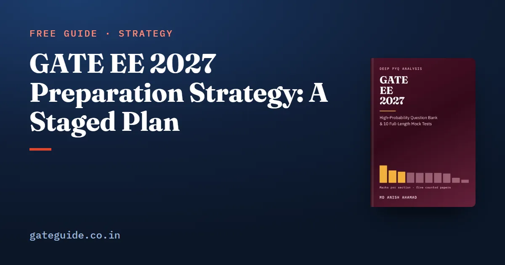

GATE EE 2027 Preparation Strategy: A Staged Plan

A good GATE EE 2027 preparation strategy has four stages. First, learn every section in an order that both the marks and the dependencies allow. Second, read the named topics no past paper has asked. Third, spend the five official papers deliberately. Fourth, move to mocks and a disciplined last fortnight. This guide teaches each stage and the reasons behind it; shorter plans compress the same stages into fewer weeks.
In this guide
Key takeaways
- The plan is built on counted marks from the 2022 to 2026 papers and on the unchanged 2027 syllabus; the stages themselves are a judgement.
- Engineering Mathematics gets a short daily slot from the first week to the last.
- Electric circuits comes early, Signals before Control, and Machines before Power Systems, because each feeds the next.
- Thirteen named topic groups have never been asked; they get one dedicated week and a revisit.
- Sit the 2022 paper early as a map, work 2023 and 2024 by section, and hold 2025 and 2026 for full timed practice.
- General Aptitude gets an hour a week from week one, and an error log starts on day one.
What the plan is built on
Two kinds of input sit under every stage. The first is counted: the marks each section drew in the five official EE papers from 2022 to 2026. The second is judgement: the order and pacing chosen from those counts. Keep the two apart, and you can rebuild the plan yourself if you disagree.
The counted facts that matter most:
| Fact | What it means for the plan |
|---|---|
| Engineering Mathematics was the top technical section every year, 13 to 18 marks | It runs daily, not as one block |
| The top four sections carry 219 of 425 technical marks | They get the most weeks |
| Six middle sections are within a mark and a half on the mean | Order them by dependency, not by tenths |
| General Aptitude was 15 marks in every paper | It starts in week one |
| The 2027 syllabus changed no phrase from 2026 | Nothing to drop, nothing new to add |
| NAT ran from 13 to 28 questions a paper | Practise to a number, not to an option |
Stage 1: learn in an order the marks and dependencies allow
The book's suggested order is Electric circuits, then Signals and Systems, Control Systems, Electrical Machines, Power Systems, Power Electronics, Analog and Digital Electronics, Electromagnetic Fields and Measurements. Engineering Mathematics runs beside all of them.
Three moves depart from pure weight order, and each has a reason:
- Electric circuits first. Machines, power systems, converters and instruments are all analysed as circuits. Nine questions counted in other sections had circuits as their alternative home.
- Signals before Control. The Laplace transform, transfer function and frequency response are learned once and used throughout Control.
- Machines before Power Systems. The synchronous machine, transformer and per-unit equivalent circuit are the building blocks of every power-system model.
Remember: Within that order, start with your weakest heavy section, not your strongest. The marks you do not have are the only marks you can gain.
A weekly shape for Stage 1
A useful rhythm is four days of new topics, one day of practice questions on them, one day of General Aptitude plus last week's wrong answers, and one day for a timed mixed set or rest. Mathematics takes thirty to forty minutes every day.
Here is how that fits into a 25-hour week, as a worked example. Say you study 3 hours on each of five weekdays and 5 hours on each weekend day:
That is about 19 per cent of your week on mathematics, close to its share of the counted technical marks. One hour of General Aptitude is 4 per cent of the week, for 15 sure marks.
Stage 2: the named topics no paper has asked
Thirteen topic groups the 2027 syllabus names produced no counted question in five papers. They include magnetic circuits, RMS and average values, per-unit quantities, series and shunt compensation, insulators, digital meters, oscilloscopes, oscillators, active filters, timers and Schmitt triggers.
Past-paper practice will never bring you to them, which is exactly why they need a planned slot. Most are short: a reluctance, a string efficiency, a 555 timing formula, a Schmitt threshold. The book recommends one dedicated week in the middle of the plan and a half-day revisit in the last month.
Trap: Per-unit quantities do not belong in that week. Fault analysis and load flow are done in per unit, so learn them inside Power Systems.
Stage 3: spend the five papers deliberately
The five official papers are 325 real questions, and that is the whole record. Use them in three ways.
| Paper | When | How |
|---|---|---|
| 2022 | First few weeks | Timed, as a map of the exam; it has no MSQ |
| 2023 and 2024 | As each section is learned | Section by section |
| 2025 and 2026 | Near the end | Full timed papers |
Every technical question in those papers but one sits inside the 2027 syllabus. The exception, 2023 (Q57) on microcontroller flags, is the one counted item you can recognise and set aside.
Stage 4: mocks and the last fortnight
Begin full mocks once most sections are learned. Follow each one with an evening of analysis.
- Score each mock section by section, never only as a total.
- Log every lost mark as a misread, a wrong method, a slip or not known.
- Never leave a NAT blank; it carries no penalty.
- Treat each MSQ option as its own true-or-false statement.
- In the last fortnight, learn nothing new except the short never-asked topics.
- In the last week, revise from your formula sheet and error log, and sit one paper to keep the three-hour rhythm.
In one line: Learn in order, read the gaps, spend the real papers carefully, and let mocks expose what is left.
Fitting the plan to your calendar
GATE 2027 runs from 6 to 21 February 2027, with results on 19 March 2027. Check the GATE 2027 exam dates and plan your stages backwards from your paper's date. Read the admit card and exam-day rules before the final week rather than during it.
Two habits run under all four stages. Practise numerical answers on the GATE virtual calculator, and keep the General Aptitude preparation going every week. The marking scheme, common to every GATE paper, tells you how each answer is scored. The GATE EE 2027 book lays this plan out with its topic tables, a ranked list of a hundred questions to work first, and ten full mocks in the 2027 pattern.
Quick revision
- Four stages: learn, read the gaps, use the five papers, then mocks.
- Mathematics daily; General Aptitude weekly from week one.
- Circuits early; Signals before Control; Machines before Power Systems.
- Start with your weakest heavy section.
- One week for the thirteen never-asked groups; per-unit goes with Power Systems.
- 2022 early, 2023 and 2024 by section, 2025 and 2026 as timed papers.
- Analyse every mock by section and by cause of lost marks.
Frequently asked questions
What is the best strategy to prepare for GATE EE 2027?
Work in four stages. First learn every section in an order that respects both counted marks and dependencies, with Engineering Mathematics running daily. Second, read the named topics no past paper has asked. Third, use the five official papers deliberately. Fourth, sit mocks and revise from your error log in the last fortnight.
Which subject should I start with for GATE EE?
The book's staged plan starts with Electric circuits, because machines, power systems, converters and instruments are all analysed as circuits, and runs Engineering Mathematics daily beside it. Within that order, start with your weakest heavy section rather than your strongest, because the marks you do not yet have are the only ones you can gain.
How many hours a day should I study for GATE EE?
There is no counted answer to this. What matters is a steady weekly shape that keeps mathematics and General Aptitude running every week, new material on most days, and one day for review. Choose hours you can keep for months rather than a heroic figure you abandon in three weeks.
When should I start mock tests for GATE EE?
Once most sections are learned, usually in the last two or three months. Space the mocks so each is followed by an evening of analysis, score them section by section, and log every lost mark by cause. A mock that is sat and not analysed is three hours spent to produce a number.
Sources
Dates, fees and the syllabus are set by the GATE 2027 organising institute and can change. Always confirm at gate2027.iitm.ac.in.